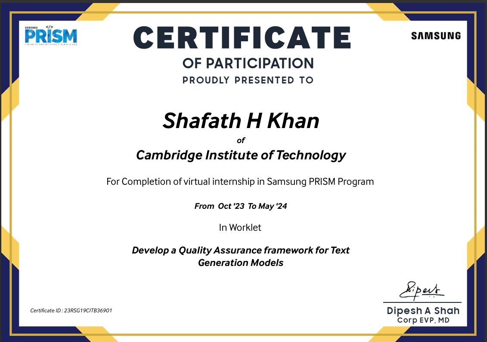

Shafath H Khan
Software Developer
As an enthusiastic Computer Science Engineering graduate, I have a solid foundation in software development, algorithms, and system design. I've proven my ability to work well in teams, tackle complex problems, and deliver top-notch solutions even under tight deadlines. My passion lies in using my technical skills and innovative thinking to drive business growth and improve operational efficiency.
Featured Projects
View selected projects below. More information can be found at shafathhkhan.com.

Quality Assurance Framework for Text Generation Models
Developed a comprehensive quality assurance framework using Python and the Gemini API to evaluate the performance of generative AI models. Designed custom metrics such as precision, recall, and coherence to assess text accuracy and contextual relevance. Automated the testing process to streamline the evaluation of large datasets, ensuring consistency and saving development time.
Key Technologies: Python, Gemini API, Automation, Model Evaluation Metrics
View project / case study
Car Showroom Database Management System
Created a database management system for a car showroom using SQL, HTML, and CSS, integrated with JDBC for seamless backend connectivity. Enabled efficient storage, retrieval, and manipulation of customer and inventory data. Designed an intuitive user interface for streamlined operations, improving sales processes and customer service efficiency. Incorporated features such as real-time data updates and automated report generation.
Key Technologies:SQL, HTML, CSS, JDBC.
Internship
Quality Assurance Framework for the Evaluation of Text Generation Models
Intern
Samsung Research & Development
October 2023 - May 2024
During my internship at Samsung R&D, I contributed to cutting-edge advancements in generative AI by developing a quality assurance framework for evaluating text generation models. This framework, implemented using Python and the Gemini API, introduced comprehensive evaluation metrics that improved model accuracy by 15% and reliability by 20%. Through this experience, I honed my skills in automation, data analysis, and collaborative problem-solving, while gaining hands-on exposure to the software development lifecycle. My work not only optimized testing processes but also set a benchmark for evaluating future AI models, reinforcing my passion for creating high-quality, impactful solutions.
Impact: Enhanced the robustness of AI-generated content for various applications, such as chatbots and automated writing tools.
Education
Clarence High School - Bangalore
10th, 2018
Percentage - 89%
Principal's Trophy for the Excellence in ICSE
St.Joseph's Pre University College - Bangalore
2nd PUC, 2020
Percentage - 92%
Cambridge Institute of Technology - Bangalore
Computer Science & Engineering, 2024
CGPA - 8.4